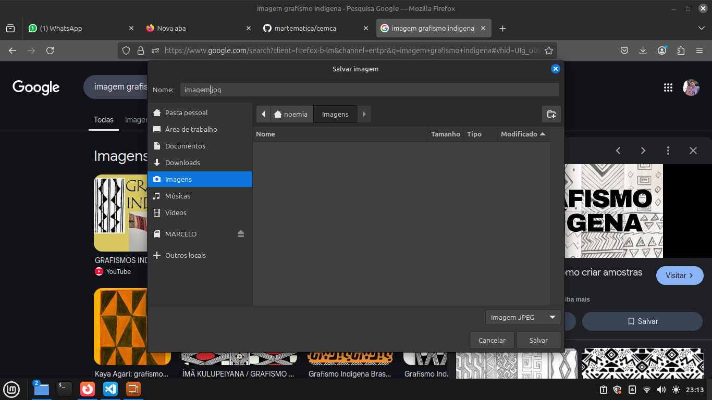
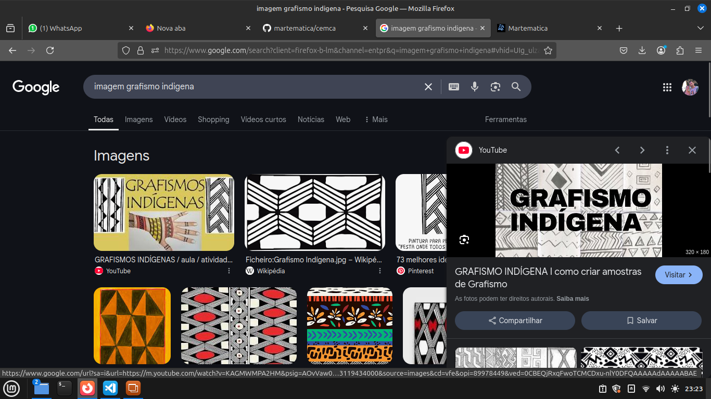

Informatica Básica e Robótica
Salvar imagem da Internet
Primeiramente precisamos entra na internet escolhemos um navegador e entramos buscamos uma imagem abrimos clicamos em cima da imagem com botão
direito e vamos em Salvar imagem como

escolha a pasta das Imagens para salvar e coloque o nome exemplo Imagem.jpg você só conseguirá usar a imagem na apresentação caso for dos formatos
jpg ou png caso contrário precisa salvar da segunda maneira
A segunda forma e abrir a imagem e usar as teclas fn mais a tecla prt scr sys rq juntas para recortar uma parte da tela
vai abrir uma janela
clica em seleção e com o botão esquerdo clica e arrasta para selecionar o contorno da imagem pretendida

depois disto coloque o nome exemplo imagem.png e salvar na pasta Imagem do computador
Atividade
- Salve uma imagem de grafismo indigena? uma imagem de armadilha indìgena? do mapas do paraná com os povos indigenas? do mapa de Tamarana-PR via google maps?